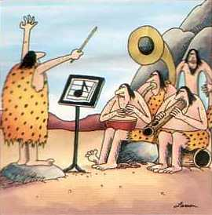

¡Broma de abril!
El ICR cae en una broma del Día de la Broma
El episodio del 9 de septiembre de 2000 de Science, Scripture and Salvation, the radio show of the creationist organization Instituto de Investigación del Creacionismo, was about Neandertals:"Hombres de cueva — eso es lo que la mayoría de nosotros pensamos cuando imaginamos a los neandertales. La verdad es que los neandertales utilizaban el lenguaje y herramientas, tocaban instrumentos musicales, poseían fuertes lazos sociales y practicaban ritos religiosos. ¡Escucha y aprende!"Musical instruments?? According to the ICR,
"Existe evidencia abrumadora de que los neandertales tenían inclinación musical."The first evidence cited is a piece of a bone from a bear, which seems to have 4 regularly-spaced holes and looks like it could have been a part of a flute. The jury is still out on whether this is a genuine musical instrument or not.
{kind=link}
¿Qué hay de otros instrumentos y esa "abrumadora evidencia"? Marvin Lubenow, autor del libro creacionista más importante sobre el origen humano, Huesos de Controversia, continúa diciendo (comenzando a los 3 minutos y 25 segundos del grabación):
"Muchos de estos artículos fueron descubiertos en el valle de Neander en Alemania, donde se descubrió el primer fósil de neandertal en 1856. Por ejemplo, una tuba, un instrumento musical hecho con un diente de mastodonte, algo que parece un órgano hecho con una parte de la vejiga de un animal, un triángulo y un xilófono hecho con huesos vaciados."

These claims obviously come from the April 1997 issue of science magazine Discover, which contained an article about the discoveries of paleontologist Oscar Todkopf in the Neander Valley in Germany. These were:- Una pieza de 6 pies de colmillo de mamut convertida en una tuba
- Un instrumento similar a un gaita hecho con la vejiga de un animal grande
- Un triángulo, fabricado con huesos delgados
- Una colección de huesos huecos de diferentes longitudes, que Todkopf sugirió que podrían ser parte de un xilófono (lo llamó un 'xilobono')
- La primera pintura rupestre de Neandertal conocida de Neandertal, mostrando músicos marchando junto a alguna notación musical sospechosa
- Un cráneo de Neandertal
{kind=link}
Lamentablemente, sin embargo, todo fue una broma de abril.
Ver una copia del artículo original de Discover, junto con las respuestas de los lectores.
No existe una universidad Hindenburg que yo pueda descubrir, pero el Hindenburg es famoso como el dirigible lleno de hidrógeno que fue destruido en un incendio catastrófico en 1937 (Nota para mí mismo: evitar hacer una conexión entre el ICR y los globos de gas inflamables. oops..). "Todkopf" es una concatenación de las palabras alemanas para "muerte" y "cabeza" (una alusión, quizás, a la banda The Grateful Dead, cuyos fans son conocidos como 'Deadheads'?). Las declaraciones extrañas de 'Todkopf' sobre cómo los neandertales podrían haber tocado el gaita con la nariz, y sobre cómo podrían haber ahuyentado la caza con su música, deberían haber sido una señal de que el artículo era una broma. El cuadro, por supuesto, también forma parte del engaño; no hay conocidos pinturas rupestres neandertales.
P.D.: El 1 de noviembre de 2000 (aproximadamente 7 días después de que esta página fuera publicada en la web), el ICR emitió un descargo de responsabilidad pidiendo disculpas por su error. El segmento que discutía los instrumentos musicales falsificados ha sido eliminado de las copias descargables del programa. La declaración sobre la "evidencia abrumadora" de la musicalidad de los neandertales permanece, aunque ahora suena fuera de lugar dado que el 80% de la evidencia ha desaparecido y solo queda un instrumento (cuestionado).
El número de diciembre de 2000 de Acts and Facts, el boletín informativo de la ICR, también contenía una disculpa por su uso de la estafa.
P.P.S. Un antiguo estudiante de posgrado en paleoantropología que conozco me dijo que había disfrutado mucho de la broma de April Fool de Discover, excepto por el hecho de que era tan obviamente una estafa que nadie caería en ella. Claramente, no había calculado la experiencia del departamento de paleoantropología del ICR!
P.P.P.S. Y ahora (abril de 2005) ha aparecido una referencia al mismo artículo en un artículo de Brad Harrub que está en el sitio web Answers in Genesis! (la referencia fue eliminada silenciosamente unos días después de que la señalara). Ve a esta entrada en Panda's Thumb para más información sobre el artículo de Harrub. Señalé otro error en él (también ahora eliminado silenciosamente de la versión en línea), lo que permitió que pasara del proceso de "revisión por pares" de Answers in Genesis para ser publicado en su Technical Journal.
Esta página es parte del FAQ sobre homínidos fósiles en el Archivo talk.origins.
Página de inicio |
Especies |
Fósiles |
Creacionismo |
Lectura |
Referencias
Ilustraciones |
Novedades |
Comentarios |
Búsqueda |
Enlaces |
Ficción
http://www.talkorigins.org/faqs/homs/aprilfool.html, 03/31/2006
Copyright © Jim Foley
|| Envíame un correo electrónico